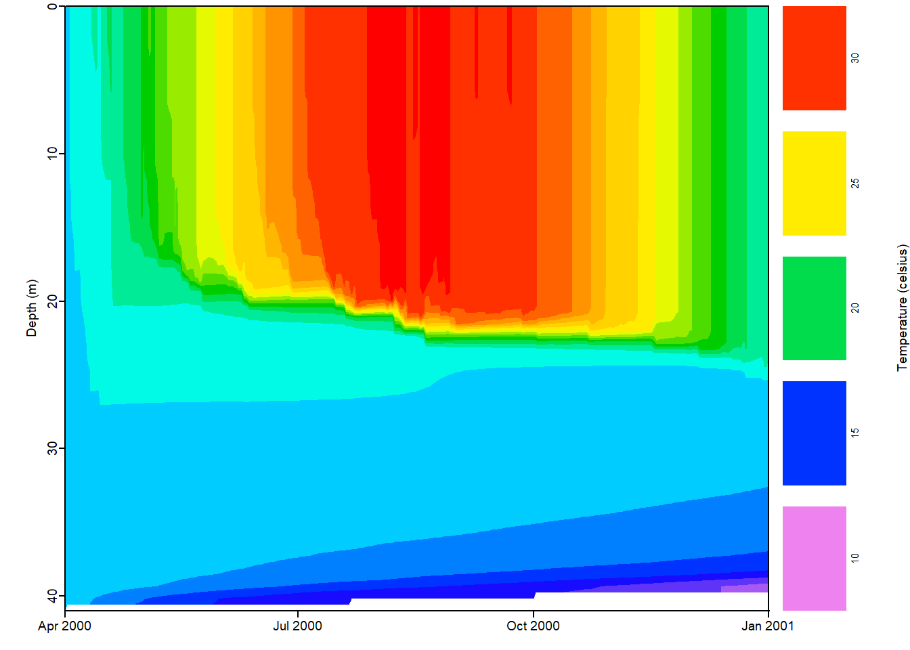

21 Simulated Data for hypothesis testing I
Learning Objectives
After completing this tutorial you should be able to
- formulate the importance of simulated data to exploring complex questions
- set up and run the General Lake Model (GLM) to simulate lake thermal structure
- design climate scenarios, simulate their effect on lake thermal structure, and interpret the model output
Download the 07_LakeSimulations project folder. Once you have downloaded it, unzip the project directory into your BI449 directory.
Your first step is creating a new R project in your project folder. To do this open Rstudio then use the drop down menu in the top right corner to select New Project and from there New Project in an existing directory. From there, navigate to and select the project folder create an R project. Remember, your Rproj sets the working directory so you need to make sure that it is in your project folder.
Next, open a new Rmd file using File > New File > R Markdown or the drop down menu of the green plus button below File and save it in your Lake Modeling project directory. Use the setup chunk to set your global settings for the document using the options you’ve learned about in the last few projects. Remember, you should always check your html document after it knits to make sure that everything has converted as expected, including your figures, bullet points etc.
Before we start we need to install a few packages if you have not already done so. Remember, if you have a code chunk with code to install packages it will run every time you knit your document or use the run all chunks options. It is best to either comment out those lines of code, inactivate the code chunk using eval=FALSE or just run them directly in the console.
install.packages("sp")
install.packages("devtools")
# this will likely take a few minutes
# if successful will say "DONE (GLMr)" at end of output
devtools::install_github("CareyLabVT/GLMr", force = TRUE)
# this will also take a few minutes
# you might get a pop up asking if you want to compile from source
devtools::install_github("CareyLabVT/glmtools", force = TRUE)Let’s load our packages so we can get started.
# load libraries
library(tidyverse)
library(patchwork)
library(sp)
library(GLMr)
library(glmtools)
# turn of sci notation
options(scipen=999)21.1 Macrosystems ecology
► Question 21.1
Briefly describe the central questions explore in macrosystems ecology and outline some of the challenges to the field.
21.2 The power of simulated data
► Question 21.2
Describe benefits and challenges of using simulated to investigate complex questions, especially in the context of global change ecology.
In this module, we are going to set up a lake model to explore how different climate scenarios will impact the thermal structure of a lake.
21.3 Get to know the model
We are going to start off by plotting water temperature data using a default model lake and real climate forcing data to get to know the model.
We are going to use additional scripts/files that will allow you to tell the General Lake Model (GLM) how you want the model to be run. The GLM is not written in R, rather we have wrapper functions written in R that allow us to interface with the model. The advantage of doing this is that we can run the model and then interpret the output in the same environment.
We will use *.nml scripts to run the GLM simulations. This script sets all the initial conditions of the lake we want to simulate, i.e. id defines the parameters. It includes various sections including glm_setup, morphometry, and metereology.
We are going to run all of our simulations in separate directories that will contain input files/scripts defining parameters, all output will also be written to that directory. If you check the file structure for our project directory you will notice that we have a folder called sim. This already contains a file called glm2.nml for a default lake We will create a vector with our path, that way we won’t constantly have to type in the path, instead we can use the object name.
# set path for nml file
nml_file <- "sim/glm2.nml"
# read in nml file
nml <- read_nml(nml_file)
# see contents
print(nml)## &glm_setup
## sim_name = 'GLMSimulation'
## max_layers = 500
## min_layer_vol = 0.025
## min_layer_thick = 0.5
## max_layer_thick = 1.5
## Kw = 0.6
## coef_mix_conv = 0.125
## coef_wind_stir = 0.23
## coef_mix_shear = 0.2
## coef_mix_turb = 0.51
## coef_mix_KH = 0.3
## coef_mix_hyp = 0.5
## /
## &morphometry
## lake_name = 'AwesomeLake'
## latitude = 32.82
## longitude = 35.59
## bsn_len = 21000
## bsn_wid = 13000
## bsn_vals = 45
## H = -252.9, -251.9, -250.9, -249.9, -248.9, -247.9, -246.9, -245.9, -244.9, -243.9, -242.9, -241.9, -240.9, -239.9, -238.9, -237.9, -236.9, -235.9, -234.9, -233.9, -232.9, -231.9, -230.9, -229.9, -228.9, -227.9, -226.9, -225.9, -224.9, -223.9, -222.9, -221.9, -220.9, -219.9, -218.9, -217.9, -216.9, -215.9, -214.9, -213.9, -212.9, -211.9, -208.9, -207.9, -203.9
## A = 0, 9250000, 15200000, 17875000, 21975000, 26625000, 31700000, 33950000, 38250000, 41100000, 46800000, 51675000, 55725000, 60200000, 64675000, 69600000, 74475000, 79850000, 85400000, 90975000, 96400000, 102000000, 107000000, 113000000, 118000000, 123000000, 128000000, 132000000, 136000000, 139000000, 143000000, 146000000, 148000000, 150000000, 151000000, 153000000, 155000000, 157000000, 158000000, 160000000, 161000000, 162000000, 167000000, 170000000, 173000000
## /
## &time
## timefmt = 2
## start = '2000-03-31 00:00:00'
## stop = '2001-01-01 00:00:00'
## dt = 3600
## timezone = 2
## /
## &output
## out_dir = '.'
## out_fn = 'output'
## nsave = 24
## csv_lake_fname = 'lake'
## csv_outlet_allinone = .false.
## csv_outlet_fname = 'outlet_'
## csv_outlet_nvars = 3
## csv_outlet_vars = 'flow','temp','salt'
## csv_ovrflw_fname = 'overflow'
## /
## &init_profiles
## lake_depth = 41
## num_depths = 5
## the_depths = 1, 10, 20, 30, 40
## the_temps = 18, 18, 18, 18, 18
## the_sals = 0.5, 0.5, 0.5, 0.5, 0.5
## /
## &meteorology
## met_sw = .true.
## lw_type = 'LW_IN'
## rain_sw = .false.
## atm_stab = .false.
## catchrain = .false.
## rad_mode = 1
## albedo_mode = 1
## cloud_mode = 4
## subdaily = .true.
## meteo_fl = 'met_hourly.csv'
## wind_factor = 1
## rain_factor = 1
## sw_factor = 1
## lw_factor = 1
## at_factor = 1
## rh_factor = 1
## ce = 0.0013
## ch = 0.0013
## cd = 0.0013
## rain_threshold = 0.01
## runoff_coef = 0.3
## /
## &bird_model
## AP = 973
## Oz = 0.279
## WatVap = 1.1
## AOD500 = 0.033
## AOD380 = 0.038
## Albedo = 0.2
## /
## &inflow
## num_inflows = 0
## /
## &outflow
## num_outlet = 0
## /
## &snowice
## snow_albedo_factor = 1
## snow_rho_max = 300
## snow_rho_min = 50
## /
## &sed_heat
## sed_temp_mean = 9.7
## sed_temp_amplitude = 2.7
## sed_temp_peak_doy = 242.5
## /Let’s take a look at the various values that have been set for different parameters that determine how we will be running our simulation.
First, let’s find out what our lake is called.
# query lake name
get_nml_value(nml, "lake_name")## [1] "AwesomeLake"► Question 21.3
Use the get_nml_value() function to query additional parameters that have been set in your *.nml file. You can do this by changinge lake_name to lake_depth, latitude, and longitude.
Now, let’s take a closer look at the meteorological input data for the duration of our simulation.
plot_meteo(nml_file)Figure 21.1: Metereological data describing drivers of thermal structure of Lake Awesome.

► Question 21.4
Briefly describe what meteorological data has been defined for this simulation run.
► Question 21.5
Use the information you’ve pulled from the nml file to describe where your lake is located and what the maximum depth is.
This lake is based on a real lake. Figure out where this lake is located (what the name of the lake is) and argue whether you think the metereolgical data is reasonable for the model lake.
21.4 Run simulation & compare to real data
Because this is a real lake we also have observed data from sensors in the lake.
► Question 21.6
Outline the importance of being able to assess the quality of a model and simulated data using observed data.
Now, let’s get to the good stuff and actually run the simulation; to run this simulation it will pull data from the nml file describing the lake along with information on drivers from the met_hourly.csv file in your sim folder.
# run model
run_glm("sim/", verbose = TRUE)## [1] 0If you check your sim directory, you should now see output files that have been added (check the modified dates).
The important files is output.nc which contains all the output data from our simulation. Again, we’ll create a vector with the path to the output file. This is our baseline simulated data based on observed conditions recorded in the met_hourly.csv file.
baseline <- file.path("sim", 'output.nc')Now, let’s pull the data describing daily surface water temperatures in the lake during our baseline simulation and store it in a data.frame so we can compare it to our climate scenario down the road.
# create data frame with surface temperature
surf_temp <- get_var(file = baseline, "temp", reference = "surface", z_out = c(1)) %>%
rename(Baseline_Temp = temp_1)For now, let’s visualize our simulated water temperatures using a heat map.
plot_temp(file = baseline, fig_path = FALSE)Figure 21.2: Thermal structure for our simulated lake.
► Question 21.7
Briefly describe how the data is being displayed in this figure and how it should be interpreted.
► Question 21.8
Describe the seasonal pattern of thermal structure in this lake across seasons. Be specific, e.g. use the color gradient scale to identify when the lake is the warmest, what maximum and minimum temperatures are.
In your sim filder there is an additional filed called field_data.csv contains the observed data for buoys in the lake. Let’s compare how modeled data (baseline) compares to the observed field data for our lake.
# define observed field data
field_file <- file.path("sim", "field_data.csv")
# plot simulated vs observed data
plot_temp_compare(baseline, field_file)Figure 21.3: Comparison of field data and simulated temperatures.

The top panel shows the observed data measured at different epths and times using high-frequency sensors on a buoy, each measurement is depicted by black circles. The heatmap represents the extrapolated values between sensors.
The bottom panel shows the modeled data.
► Question 21.9
Briefly assess how well the model replicates the real-world lake (explain how you are coming to this conclusion); include information on the water temperatures and thermocline depths in your comparison.
We can also compare different physical lake characteristics between the simulated and observed lake.
First, let’s take a look at what metrics we can compare.
sim_metrics(with_nml = FALSE)## [1] "buoyancy.freq" "center.buoyancy" "thermo.depth" "water.density" "water.temperature"We can extract the observed and simulated thermocline depths for these metrics and compare them to assess the quality of our model.
Let’s start with pulling out information on the thermocline depths and return them as a data.frame.
therm_depths <- compare_to_field(baseline, field_file, metric = "thermo.depth",
as_value = TRUE, na.rm = TRUE)
head(therm_depths)## DateTime obs mod
## 7 2000-04-06 01:00:00 11.78483 3.409255
## 8 2000-04-07 01:00:00 11.79451 8.287353
## 9 2000-04-08 01:00:00 14.53049 20.472547
## 10 2000-04-09 01:00:00 15.72452 21.391872
## 12 2000-04-11 01:00:00 19.94560 26.142652
## 13 2000-04-12 01:00:00 19.94391 3.153735► Question 21.10
Plot the observed vs. simulated thermocline depths to compare the model and observed data.
► Solution

► Question 21.11
Extract the observed and model water temperatures into a data.frame called water_temp and create a plot to compare them.
► Solution

► Question 21.12
Extract the observed and model water densities into a data.frame called water_density and create a plot to compare them.
► Question 21.13
Explain why water temperature and water densities have multiple data points for each day. Compare and contrast the patterns you observe between the two plots and explain the mechanism linking the two metrics.
Define the terms epilimnion, hypolimnion, thermocline, stratification, and isothermal. Use these terms to describe the seasonal pattern of water temperatures and stratification
► Question 21.14
Use your comparisons of observed and modeled data for various metrics (thermocline, water temperatures, water density) to assess the quality of our lake model and argue whether or not our modeled output is a good representation of the observed lake water temperatures.
21.5 Develop your own climate scenario
Now that we have an idea of how to interact with the model, and we’ve tested the quality of our model by comparing observed and simulated data sets let’s use the model to simulate a data set for a specific climate model.
You are going to develop two climate scenarios involving an extreme event (e.g. hurricane) and a more gradual change (e.g. increase in observed air temperature). Find a partner and share the work!
For some inspiration on your climate scenario you can check out a visualization of high and low emission scenarios and how they impact temperature and precipitation. You can also take a look at global projections to see how much change is expected for various models and metrics.
► Question 21.15
For each climate scenario describe which meteorological variables (air temperature, precipitation, wind) you will modify, by how much, and when during your simulations you will modify the variables you have specified.
Next, you will need to modify the input data (met_hourly.csv) to reflect the climate scenario you want to run.
Make sure to follow the instructions on how to do this closely to make sure that you will be able to use your input file without issues to run the model.
In your project folder create a new folder called sim1. Then make a copy of met_hourly.csv and place it into that folder and rename it sim1_met_hourly.csv. Be sure to do this before you open it and make any changes to the file. Also add a copy of glm2.nml to this folder.
Before you start - any time you open a *_met_hourly.csv file in Microsoft Excel it will alter the date/time formatting of the file so that GLM cannot read it. To avoid this error you will need to follow the steps below any time you change your met file.
- Just to be safe, copy and paste an extra version of the
met_hourly.csvfile in yoursimfolder so that you have a backup instead you make mistakes and want to go back to it. rename itmet_hourly_original.csvor similar and be sure not to open this file in excel. - Open the
sim1/sim1_met_hourly.csvfile in Excel. Manipulate the input variables to reflect the weather event/climate scenario you have designed1 A note on units: rain should be in meters per day, usually we measure precipitation in mm/d but make sure to convert to m/d by multiplying by 0.001 when you enter it into yourmetfile. The oder of columns does not matter but you can only have one of for each variable and the columns names should not be changed. - Once you have finished editing your file, reformat your date/time column.
- highlight the
timecolumn in Excel - click on
Format Cellsand then onCustom - in the
TypeorFormattingbox, change the default toYYYY-MM-DD hh:mm:ssexactly - this is the only format that GLM recognizes. - save the file once you are done and close the
csvfile - any time you open the file in Excel you will need to format this column and save the change!
- highlight the
- Read in the altered
met_hourlyfile, convert the format of the date/time column and write it back out to file.
# read in altered met file & convert time format for GLM
metadata <- read_delim("sim/met_hourly_plus2.csv", delim = ",") %>%
mutate(time = as.POSIXct(strptime(time, "%Y-%m-%d %H:%M:%S", tz="EST"))
# write back to file
write_delim(metadata, "sim/sim1_met_hourly.csv", delim = ",")Any time you alter the met file you will need to go back through these steps!
Before we can run the simulations, we will also need to edit the glm2.nml file to change the name of your input meteorological file so that it knows what file it should be looking for to get the meteorological data to run the model with.
Open the nml file that you have placed in your sim1 folder in a text editor and scroll down to the meteorology section. Here, change the meteo_fl entry to your new file name (sim1_met_hourly.csv) for your climate scenario2 Pro tip: Us the Find options to locate the nml file. Details count: Make sure that your quotes ' around the file name are upright and not slanted!.
Once you’ve edited the met file name in your nml file, double check that you’ve made sure that it’s correct. You can do this by reading in the file.
# change the path to new sim folder
nml_file <- "sim1/glm2.nml"
# read altered nml file
nml <- read_nml(nml_file)
# check met file name
get_nml_value(nml, "meteo_fl")If you made the changes correctly the output should list the name of the meterological file you specified that describes your weather/climate scenario (sim1_met_hourly.csv).
Once you have completed this you are ready to run your climate scenarios. You should be creating the input files to match one of the climate scenarios you will be running (folder sim1) and then you will “swap” folder & files with your partner … you can either rename everything to sim2 or agree with your partner ahead of time which of you will prep the sim23 Note that you will need to make several changes to the code and in the files so that everything for your second climate scenario is sim2..
21.6 Run climate scenario 1
► Question 21.16
Give a one sentence description of the scenario you are running and then outline how you would expect your climate change scenario to affect the thermal structure in Awesome Lake both in terms of water temperature and in stratification timing and strength.
Now, let’s run the scenario.
# run model for climate scenario
run_glm("sim1/", verbose = TRUE)Our next step will be specifying the file path for our output so we can use the functions from glmtools to process the simulation output. Since this is our first climate scenario, we’ll name the variable climate1. Contrast this with our variable baseline that has the simulated output for current, typical meteorological conditions across a year based on the met_hourly.csv input file. Keep in mind that we use the same parameters to describe the link for both simulations - so we are keeping the lake the same and comparing different scenarios for the drivers of thermal structure4 The other type of comparison you could make is having the same conditions for drivers and two or more different lakes..
# define file path for output
climate1 <- file.path("sim1", "output.nc")Next, let’s pull the surface temperature for our first climate scenario5 Recall, that we did this earlier or our baseline scenario and stored that information in the data.frame surf_temp..
surf_temp_cl1 <- get_var(file = climate1, "temp", reference = "surface", z_out = c(1)) %>%
rename(Scenario1_Temp = temp_1)21.7 Run climate scenario 2
► Question 21.17
Give a one sentence description of the scenario you are running and then outline how you would expect your climate change scenario to affect the thermal structure in Awesome Lake both in terms of water temperature and in stratification timing and strength.
Now, let’s run the scenario. Make sure that your folder sim2 has the appropriate met data and that you have changed the filename in the nml file accordingly.
# run model for climate scenario
run_glm("sim2/", verbose = TRUE)Again, we will want to specify the file path for our output - we’ll name this variable climate2. So now we have three file path variables baseline, climate1, and climate2. We will use those in the next section to plot the results of our simulations.
# define file path for output
climate2 <- file.path("sim2", "output.nc")Next, let’s pull the surface temperature for our second scenario climate scenario.
surf_temp_cl2 <- get_var(file = climate1, "temp", reference = "surface", z_out = c(1)) %>%
rename(Scenario2_Temp = temp_1)21.8 Compare your results
We have three scenarios to compare, your baseline which is the scenario based on current conditions, a simulation of a short-term climate/weather event (climate1), and a gradual change (climate2)6 Depending on how you set this up the names might be swapped for your scenarios.
► Question 21.18
Use your data wrangling skills to create a single data frame that contains the surface temperature for your baseline data and your two climate scenarios and create plot that allows you to compare how surface temperature changes over the simulated time period for all three scenarios.
► Question 21.19
Describe your results using the figure you just created. Remember to start with the general trends and patterns first and then highlight notable details. Be specific (consider things like min/max temperature, changes over time etc.).
► Question 21.20
Create a plot showing the thermal structure of Lake Awesome for your baseline scenario, scenario 1 & 2.
► Solution
► Question 21.21
Compare and contrast the thermal structure of Lake Awesome for the simulations of your baseline amd two climate scenarios based on the figure above. Be specific - key things to think about are min/max temperatures, stratification vs isothermal, depth of the thermocline, how patterns change over time).
Remember, this should be just a description - hang onto your discussion & interpretation of your results for the next question!
► Question 21.22
Discuss your results. Things to consider: Do your results support or contradict your hypotheses (how you were expecting the surface temperature and thermal structure to change for each sceneario), what drivers did you manipulate and what mechanisms are in play in how they alter thermal structure (which cause heating/cooling/mixing?), consider temporal and spatial patterns (depth), what impacts might this have on organisms living in the lake?
► Question 21.23
Over the course of the semester we have discussed that (data) science is an iterative process, where we ask initial questions/formulate an initial hypothesis, test/explore it and then once we are done we generally have additional questions to explore.
Based on what you have learned from running one simulation each for a gradual change (climate) and an extreme event (weather/climate), outline how would your refine your question and design and experiment running a series of simulations.
21.9 Acknowledgments
These activities are based on the EDDIE Climate Change Effects on Lake Temperatures module.7 Carey, C.C., S. Aditya, K. Subratie, V. Daneshmand, R. Figueiredo, and K.J. Farrell. 24 August 2020. Macrosystems EDDIE: Climate Change Effects on Lake Temperatures. Macrosystems EDDIE Module 1, Version 2.
Page built: 2021-11-04 using R version 4.0.2 (2020-06-22)